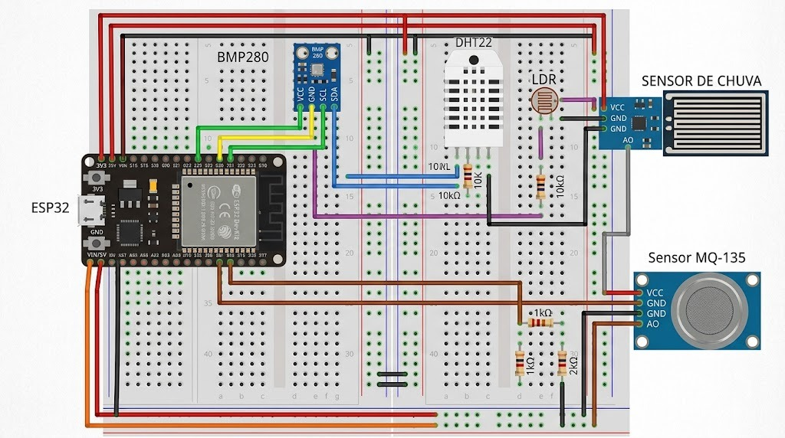

Estação Meteorológica Inteligente para Monitoramento Urbano
Especificação Técnica, Arquitetura de Software/Hardware e Fundamentos Interdisciplinares para Cidades Inteligentes e Sustentabilidade.
01 Visão Geral e Arquitetura do Sistema
O projeto consiste em uma solução integrada de Internet das Coisas (IoT) e Computação em Nuvem projetada para coletar, processar, armazenar e disponibilizar dados climáticos e de qualidade ambiental em tempo real para os cidadãos e gestores urbanos.
02 Mapeamento Interdisciplinar das Disciplinas da UNIP
O projeto foi rigorosamente estruturado para demonstrar a aplicação prática de cada disciplina cursada no 2º semestre:
| Disciplina Curricular | Aplicação Prática no Projeto |
|---|---|
| Circuitos Lógicos Digitais | Dimensionamento dos circuitos de condicionamento de sinal (divisores resistivos do LDR e MQ-135), barramento I2C para BMP280, portas lógicas e lógica combinacional de acionamento de alarme local autônomo (LED/Buzzer). |
| Lógica de Programação e Algoritmos | Algoritmos de leitura de sensores sem travamento (temporização baseada em millis()), rotinas de cálculo de média móvel para estabilização de leitura e estruturas de repetição e seleção no firmware. |
| Lógica Matemática / Pensamento Lógico | Modelagem formal de regras de consistência de dados (descarte de leituras impossíveis) e tabelas-verdade para os estados de alerta climático (ex.: Chuva Intensa $\land$ Queda Barométrica $\implies$ Alerta de Tempestade). |
| Programação Estruturada em Python | Construção da API REST completa com FastAPI, classes Pydantic para validação estruturada dos dados, manipulação de coleções (listas, dicionários, tuplas) e análises estatísticas em Python. |
| Geometria Analítica para Computação | Georreferenciamento bidimensional e tridimensional da estação, aplicação de vetores para cálculo de dispersão de poluentes/gradiente térmico e equações da circunferência no plano para delimitar raios de cobertura e impacto de alertas. |
| Educação Ambiental | Apresentação transparente e acessível de métricas de qualidade do ar e conforto térmico para conscientização dos cidadãos, suporte a políticas públicas e mitigação de ilhas de calor urbanas. |
03 Especificação de Hardware e Firmware (ESP32)
3.1. Lista de Componentes do Dispositivo
| Componente | Função | Tipo de Interface | Faixa de Operação |
|---|---|---|---|
| ESP32 NodeMCU (30 pinos) | Processador central e conectividade Wi-Fi | Microcontrolador Dual-Core 240 MHz | 3.3V DC |
| DHT22 (AM2302) | Temperatura e Umidade Relativa do Ar | Digital (1-Wire proprietário) | -40°C a +80°C / 0 a 100% UR |
| BMP280 | Pressão Atmosférica e Altimetria | Digital (Barramento I2C) | 300 a 1100 hPa |
| MQ-135 | Qualidade do Ar (CO2, NH3, fumaça, benzeno) | Analógico (ADC) / Digital comparador | 10 a 1000 ppm |
| LDR (Fotoresistor 5mm) | Intensidade luminosa / Radiação solar | Analógico (Divisor de Tensão) | 0 a 4095 (ADC de 12 bits) |
| Sensor Pluviométrico | Detecção e índice de precipitação de chuva | Analógico / Digital de lâmina | 0 a 4095 (ADC) |
| LED RGB + Buzzer 5V | Alarme sonoro/visual autônomo local | Digital (Saída GPIO com transistor) | 3.3V / 5V |
3.2. Mapeamento Completo de Conexões e Pinagem (ESP32 & Protoboard)
A estação emprega uma arquitetura com duas protoboards unidas em paralelo, viabilizando a segregação física dos barramentos de alimentação de 3.3V (lógica/sensores sensíveis) e 5.0V (aquecimento do MQ-135), mitigando ruídos eletromagnéticos e instabilidades nas leituras analógicas do ADC1.
| Sensor / Periférico | Pino no Sensor | Conectar em (ESP32 / Protoboard) | Observações e Condicionamento |
|---|---|---|---|
| Alimentação Lógica (3.3V) | Trilho Vermelho (Protoboard 1 - Superior) | 3V3 do ESP32 | Barramento regulado de 3.3V para sensores lógicos (BMP280, DHT22, LDR, Sensor de Chuva). |
| GND Unificado (Terra) | Trilho Azul/Preto (Ambas Protoboards) | GND do ESP32 | GND comum a todo o circuito. Trilhos superior e inferior interligados por jumper direto. |
| Alimentação Potência (5V) | Trilho Vermelho/Laranja (Protoboard 2 - Inferior) | VIN / 5V do ESP32 | Barramento de 5V direto da USB, reservado exclusivamente para o filamento de aquecimento do MQ-135. |
| BMP280 Pressão & Temperatura |
VCCGNDSCLSDA |
Trilho 3.3V Trilho GND GPIO 22 (SCL) GPIO 21 (SDA) |
Barramento I2C digital. Deixar pinos CSB e SDO desconectados (ou ligar SDO ao GND para fixar endereço 0x76). |
| DHT22 Umidade & Temperatura |
VCC (Pino 1)DATA (Pino 2)NC (Pino 3)GND (Pino 4) |
Trilho 3.3V GPIO 4 Não conectar Trilho GND |
Barramento digital One-Wire. Sensor avulso (4 pinos) requer resistor pull-up de 10kΩ entre Pino 1 (VCC) e Pino 2 (DATA). Módulo com PCB dispensa resistor externo. |
| LDR Fotoresistor de Luminosidade |
Perna A Perna B |
Trilho 3.3V GPIO 34 (ADC1) + Resistor 10kΩ ao GND |
Divisor de tensão resistivo. Canal ADC1_CH6 livre de interferência Wi-Fi, garantindo leitura suave da incidência solar. |
| Sensor de Chuva Placa Condutiva de Gotas |
VCCGNDAO (Saída Analógica) |
Trilho 3.3V Trilho GND GPIO 35 (ADC1) |
Alimentar o comparador em 3.3V garante saída analógica de 0.0V a 3.3V, tornando seguro o pino analógico do ESP32. |
| MQ-135 Gases & Qualidade do Ar |
VCCGNDAO (Saída Analógica) |
Trilho 5V (VIN) Trilho GND GPIO 32 (via Divisor 1kΩ / 2kΩ) |
Filamento exige 5V. Divisor atenuador passivo (1kΩ em série com AO e 2kΩ para o GND) reduz sinal máximo de 5V para ~3.33V, protegendo o ESP32. |
3.3. Detalhamento dos Circuitos Passivos na Protoboard
☀️ 1. Divisor de Tensão do LDR (Luminosidade)
O LDR varia sua resistência inversamente à irradiância. Para que o ESP32 meça a variação como tensão de 0V a 3.3V:
- Conecte uma perna do LDR à linha regulada de 3.3V.
- Conecte a outra perna do LDR ao GPIO 34 (ADC1).
- Na mesma trilha do GPIO 34, insira um terminal de um resistor de 10kΩ.
- O terminal oposto do resistor conecta-se ao GND.
🛡️ 2. Divisor Atenuador de Proteção do MQ-135 (5V → 3.3V)
O aquecedor do MQ-135 opera em 5V e sua saída analógica pode atingir 5V. Para proteger o ADC do ESP32:
- Conecte a saída
AOdo MQ-135 a um resistor de 1kΩ ($R_1$). - O outro terminal de $R_1$ liga-se ao GPIO 32 e a um resistor de 2kΩ ($R_2$, ou dois de 1kΩ em série).
- O terminal inferior de $R_2$ conecta-se ao GND.
3.4. Representação Visual e Montagem na Protoboard Dupla
Abaixo está a representação visual detalhada da montagem de bancada com duas protoboards unidas lado a lado. Essa disposição assegura espaço generoso para os componentes e evita cruzamento e embolamento de fios de sinal com linhas de alimentação:

3.5. Lógica Combinacional e Circuito Local de Segurança
Em conformidade com a disciplina de Circuitos Lógicos Digitais, o ESP32 dispõe de um estágio combinacional autônomo de alarme local:
Onde: $C$ = Chuva forte detectada ($\text{intensity\_pct} > 15\%$), $B$ = Queda barométrica brusca ($\Delta P < -2\text{ hPa/h}$), $A$ = Gases nocivos elevados ($V > 2.5\text{ V}$).
3.6. Contrato de Comunicação REST API e Telemetria IoT
A comunicação com o backend em nuvem adota o protocolo HTTP sobre TCP/IP nativo do Wi-Fi do ESP32, sem intermediários adicionais:
| Parâmetro | Especificação Técnica | Justificativa de Engenharia |
|---|---|---|
| Protocolo | HTTP/1.1 (ou HTTPS) sobre TCP/IP | Integração direta com APIs REST padrão, dispensando broker MQTT na fase inicial. |
| Método & Rota | POST /api/v1/telemetry |
Endpoint semântico versionado para ingestão de novas medições. |
| Portas | 8080 (Dev Local) / 80 ou 443 (Nuvem AWS) |
Padrão para desenvolvimento local e ambiente de produção com SSL. |
| Cabeçalho de Segurança | X-API-Key: <token_secreto> |
Autenticação estática leve no header para validar dispositivos autorizados. |
| Intervalo de Envio | A cada 30 a 60 segundos | Respeita o tempo físico do DHT22 ($\ge 2\text{ s}$) e economiza largura de banda. |
A. Estrutura Canônica do Payload JSON
O firmware transmite simultaneamente o valor bruto do conversor ADC (raw_adc) e o valor processado em unidade física. Dessa forma, ajustes de calibração podem ser efetuados diretamente na nuvem sem necessidade de regravar o ESP32 em campo:
{
"device_id": "esp32-meteo-01",
"timestamp": 1792508580,
"wifi_rssi_dbm": -62,
"sensors": {
"dht22": {
"temperature_c": 25.4,
"humidity_pct": 68.2,
"status": "OK"
},
"bmp280": {
"temperature_c": 25.6,
"pressure_hpa": 1013.25,
"altitude_m": 760.5,
"status": "OK"
},
"ldr": {
"raw_adc": 2890,
"luminosity_pct": 70.6
},
"mq135": {
"raw_adc": 1150,
"voltage_v": 1.39,
"air_quality_ppm": 415.8,
"is_warmed_up": true
},
"rain": {
"raw_adc": 3850,
"intensity_pct": 6.0,
"is_raining": false
}
}
}B. Fórmulas de Conversão e Dicionário de Hardware (ADC 12 bits • 0 a 4095)
Escuro total $\approx 0$, sol pleno $\approx 4095$:
luminosity_pct = (raw_adc / 4095.0) * 100
Reconstituição da tensão original de 5V ($1.5 \times$):
voltage_v = (raw_adc / 4095.0) * 3.3 * 1.5
is_warmed_up = millis() >= 180000Placa seca $\approx 4095$, água condutiva $\approx 0$:
intensity_pct = (1.0 - (raw_adc / 4095.0)) * 100
is_raining = intensity_pct > 15.0C. Tratamento de Códigos de Resposta HTTP pelo Firmware
| Código HTTP | Significado | Ação Executada pelo ESP32 |
|---|---|---|
| 201 / 200 | Sucesso na Ingestão | Limpa buffer circular de leituras e entra em espera até o próximo ciclo. |
| 400 / 422 | Erro de Validação / JSON inválido | Imprime log detalhado de erro na porta Serial (115200 baud) e descarta leitura defeituosa. |
| 401 | Não Autorizado | Chave X-API-Key incorreta. Registra falha de segurança na Serial. |
| 500 / -1 | Erro no Servidor / Queda Wi-Fi | Armazena até 10 leituras na memória e ativa reconexão automática com backoff exponencial. |
04 Backend em Nuvem (AWS & Python)
A API foi projetada em FastAPI sobre Python 3.11/3.12, hospedada em uma máquina virtual AWS EC2 (elegível para a camada gratuita AWS Free Tier por 12 meses).
4.1. Endpoints da API REST
| Método | Rota | Descrição |
|---|---|---|
| POST | /api/v1/telemetryalias: /telemetria |
Recebe a telemetria do ESP32 (Header: X-API-Key), valida modelos Pydantic, calcula métricas derivadas e persiste no PostgreSQL. |
| GET | /api/v1/telemetry/latest |
Retorna o registro meteorológico mais recente para exibição no dashboard. |
| GET | /api/v1/telemetry/history |
Retorna séries temporais das últimas 24 horas para renderização dos gráficos no Chart.js. |
| GET | /api/v1/alerts/active |
Retorna alertas climáticos e notificações ativas de defesa civil. |
| GET | /api/v1/analysis/geometry |
Calcula a distância euclidiana do cidadão até a estação e avalia se está na área de abrangência. |
4.2. Modelos de Validação Estruturada com Pydantic (Python)
from typing import Optional
from pydantic import BaseModel, Field
class DHT22Data(BaseModel):
temperature_c: float = Field(..., ge=-40.0, le=80.0)
humidity_pct: float = Field(..., ge=0.0, le=100.0)
status: str = "OK"
class BMP280Data(BaseModel):
temperature_c: float
pressure_hpa: float = Field(..., ge=300.0, le=1100.0)
altitude_m: float
status: str = "OK"
class LDRData(BaseModel):
raw_adc: int = Field(..., ge=0, le=4095)
luminosity_pct: float = Field(..., ge=0.0, le=100.0)
class MQ135Data(BaseModel):
raw_adc: int = Field(..., ge=0, le=4095)
voltage_v: float = Field(..., ge=0.0, le=5.0)
air_quality_ppm: float
is_warmed_up: bool = True
class RainData(BaseModel):
raw_adc: int = Field(..., ge=0, le=4095)
intensity_pct: float = Field(..., ge=0.0, le=100.0)
is_raining: bool
class SensorsPayload(BaseModel):
dht22: DHT22Data
bmp280: BMP280Data
ldr: LDRData
mq135: MQ135Data
rain: RainData
class TelemetryIngest(BaseModel):
device_id: str
timestamp: Optional[int] = None
wifi_rssi_dbm: Optional[int] = None
sensors: SensorsPayload4.3. Algoritmos Matemáticos Aplicados no Backend
05 Banco de Dados em Nuvem (PostgreSQL)
Hospedado na nuvem via Supabase, Neon ou AWS RDS com conexão criptografada SSL nativa, oferecendo alta performance para séries temporais e interface web administrativa.
-- 1. Tabela de Cadastro das Estações
CREATE TABLE estacoes (
id VARCHAR(30) PRIMARY KEY,
nome VARCHAR(100) NOT NULL,
cidade VARCHAR(80) NOT NULL,
latitude DOUBLE PRECISION NOT NULL,
longitude DOUBLE PRECISION NOT NULL,
altitude DOUBLE PRECISION NOT NULL,
raio_cobertura_km DOUBLE PRECISION DEFAULT 5.0,
ativa BOOLEAN DEFAULT TRUE,
criada_em TIMESTAMP WITH TIME ZONE DEFAULT CURRENT_TIMESTAMP
);
-- 2. Tabela de Séries Temporais das Leituras
CREATE TABLE leituras_sensores (
id BIGSERIAL PRIMARY KEY,
estacao_id VARCHAR(30) REFERENCES estacoes(id),
data_hora TIMESTAMP WITH TIME ZONE DEFAULT CURRENT_TIMESTAMP,
-- Métricas processadas em unidades físicas
temperatura NUMERIC(4, 1) NOT NULL,
umidade NUMERIC(4, 1) NOT NULL,
pressao NUMERIC(6, 1) NOT NULL,
altitude_m NUMERIC(6, 1),
qualidade_ar NUMERIC(6, 1) NOT NULL,
luminosidade NUMERIC(5, 1) NOT NULL,
chuva_intensidade NUMERIC(5, 1) NOT NULL,
chuva_detectada BOOLEAN DEFAULT FALSE,
sensacao_termica NUMERIC(4, 1),
aqi_classificacao VARCHAR(30),
-- Diagnóstico do ESP32 e leituras brutas (ADC 12 bits)
wifi_rssi_dbm INTEGER,
ldr_raw_adc INTEGER,
mq135_raw_adc INTEGER,
mq135_voltage_v NUMERIC(4, 2),
mq135_warmed_up BOOLEAN DEFAULT TRUE,
rain_raw_adc INTEGER,
dht22_status VARCHAR(15) DEFAULT 'OK',
bmp280_status VARCHAR(15) DEFAULT 'OK'
);
CREATE INDEX idx_leituras_estacao_data ON leituras_sensores (estacao_id, data_hora DESC);06 Aplicação da Geometria Analítica para Computação
Em conformidade com a ementa de Geometria Analítica, o sistema implementa três formulações vetoriais e analíticas:
1. Equação Canônica da Circunferência (Raio de Cobertura de Alertas)
A área de influência climática da estação é delimitada pela equação:
Onde $(x_0, y_0)$ são as coordenadas no plano local da estação meteorológica e $r$ é o raio analítico de validade dos sensores (ex: 5 km).
2. Distância Euclidiana Usuário → Estação
Quando o cidadão abre o dashboard e compartilha sua localização $(x_u, y_u)$, a proximidade é computada por:
Se $d \le r$, o usuário recebe notificação em tempo real informando que está dentro da zona de monitoramento direto.
3. Vetores de Tendência Barométrica
A taxa de variação da pressão no tempo é tratada como um vetor gradiente:
Variações bruscas ($|\vec{v}_{\Delta P}| < -2.0 \text{ hPa/h}$) acionam o algoritmo preditivo de tempestades.
07 Dashboard Web Público Online
Hospedado em provedores modernos como Vercel ou Netlify com entrega contínua a partir do repositório Git.
Módulos Principais da Interface:
- Barra de Status em Tempo Real: Indicador verde pulsante com tempo de última sincronização.
- Grid de Cards de Telemetria: Temperatura com sensação térmica, umidade, pressão com ícone de tendência, índice de qualidade do ar com escala de cores OMS, índice de chuva e luminosidade.
- Painel de Alertas de Defesa Civil: Notificações dinâmicas geradas pela inferência lógica do backend.
- Gráficos Interativos (Chart.js): Séries temporais das últimas 24 horas permitindo zoom e inspeção ponto a ponto.
- Mapa Interativo (Leaflet.js): Marcador da estação, círculo analítico do raio de cobertura e botão para testar a distância do usuário via GPS.
- Seção de Educação Ambiental: Dicas práticas de saúde e sustentabilidade alinhadas às condições meteorológicas do momento.
08 Roteiro de Testes e Validação
| ID | Cenário de Teste | Procedimento | Critério de Aceitação |
|---|---|---|---|
| TC-01 | Coleta dos sensores | Ligar o ESP32 (real ou no simulador Wokwi) com DHT22 e BMP280. | Valores válidos no monitor serial sem travamento. |
| TC-02 | Filtragem de anomalias | Simular ruído elétrico ou sensor desconectado. | Firmware ignora leituras NaN e mantém consistência. |
| TC-03 | Ingestão na AWS | ESP32 envia payload JSON via Wi-Fi para a API. | Resposta HTTP 201 Created e registro salvo no PostgreSQL. |
| TC-04 | Disparo de Alertas | Injetar queda de pressão (< 1005 hPa) + chuva alta. | API emite alerta com severidade PERIGO para o dashboard. |
| TC-05 | Cálculo Geoanalítico | Consultar endpoint de geometria com coordenadas distantes. | Distância euclidiana calculada com precisão em km. |
| TC-06 | Responsividade do Dashboard | Acessar dashboard em celular (375x667) e desktop (1920x1080). | Layout fluido, sem sobreposição de cards ou quebra de gráficos. |
09 Estrutura Mapeada para o Relatório ABNT
- Elementos Pré-Textuais: Capa oficial UNIP EaD, Resumo (150 a 500 palavras) com palavras-chave, Abstract com keywords, Sumário numerado.
- Introdução (1,5 a 2 páginas): Contextualização das Smart Cities, relevância socioambiental dos microclimas e objetivos gerais/específicos.
- Desenvolvimento (15 a 20 páginas divididas nas 6 etapas oficiais):
- 2.1 – Concepção e Planejamento: Metodologias ágeis (Kanban), levantamento de requisitos.
- 2.2 – Circuitos Eletrônicos e Hardware: Esquemático na protoboard, dimensionamento e portas lógicas de segurança.
- 2.3 – Firmware do Microcontrolador ESP32: Rotinas em C++, temporização não-bloqueante e transmissão Wi-Fi.
- 2.4 – Backend em Nuvem e Banco de Dados: Arquitetura AWS, API FastAPI e esquema relacional no PostgreSQL.
- 2.5 – Fundamentos Teóricos Interdisciplinares: Modelagem de Lógica Matemática e formulações de Geometria Analítica.
- 2.6 – Dashboard Público e Análise de Dados: Telas, gráficos temporais, mapas interativos e responsividade.
- 2.7 – Resultados e Discussão: Logs de teste, estabilidade de comunicação e impacto na conscientização pública.
- Conclusão (1,5 a 2 páginas): Síntese dos resultados, avaliação dos desafios superados e trabalhos futuros.
- Referências: Normatização ABNT NBR 6023 (livros indicados no plano de ensino e referências técnicas).